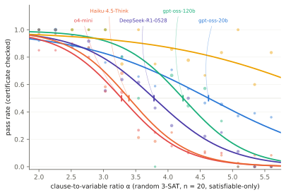

The difficulty dial is concrete: a puzzle has 20 true/false switches, and the dial sets how many constraints those switches must satisfy at once. At α = 2 (40 loose constraints) almost any settings work — every model cruises. At α = 5.6 (112 interlocking constraints) valid settings are needles in a haystack of a million possibilities. Somewhere in between, each model stops coping. The picture below is the entire method: every dot is "how often did this model solve puzzles at this dial setting", and the S-curve fitted through the dots pins down each model's breaking point (the 50/50 crossing) and how suddenly it arrives.
Try one yourself, pocket-sized — three switches, three friends:
friend 1: (x1 ON) or (x2 ON) or (x3 ON) friend 2: (x1 OFF) or (x2 ON) or (x3 ON) friend 3: (x1 ON) or (x2 OFF) or (x3 OFF) Setting x1=ON, x2=OFF, x3=ON: friend 1 ✓ (x1 is ON) · friend 2 ✓ (x3 is ON) · friend 3 ✓ (x1 is ON). The model must end with exactly: ANSWER: x1=T x2=F x3=T — and a program checks every friend.
Two properties make the measurement trustworthy. Puzzles are freshly generated, so nothing can have been memorised from training data. And scoring is cheat-proof: the model must print the full switch settings, which a program checks against every constraint — no multiple choice, no guessing floor, no human judgement.

One caution to carry through everything below: a breaking point belongs to a model and a task family. The same models that fail these logic puzzles around α ≈ 3.3 sailed through 42-step arithmetic untouched — we had to build 240–960-step monsters before Haiku finally cracked, somewhere past 300 steps. There is no single "difficulty" dial and no single "smart" number. That is why the results come as a card with rows, not a ranking with a winner.
Before the card: a word on how this differs from every leaderboard you've seen.
The field mostly measures models three ways. Static benchmark suites (MMLU, GSM8K, MATH): fixed lists of questions, score = per cent correct. They're convenient and comparable — and famously compromised: the questions are on the internet, so training data absorbs them, and a score mixes memory with ability in unknown proportions. Human-preference arenas (Chatbot Arena and friends): people vote between two answers, models get chess-style Elo ratings. Honest about vibes, silent about where a model breaks — a great bedside manner can outscore a better reasoner. Flagship demos: a hard problem solved once, impressively. One sample, no error bar, no repeat.
What all three lack is a difficulty axis: none can say "this model copes up to here, then collapses at this rate". Psychometrics solved exactly that problem for human test-takers seventy years ago (item response theory — the S-curves in this page's figures are its bread and butter), and a small literature already fits IRT curves to models' results on static benchmarks. The missing move, and this project's whole contribution, is to combine the old curve-fitting with tasks where difficulty is a generator knob: infinite fresh puzzles, difficulty set by construction, answers checked by machine. Closest prior art in that direction: the SAT-hardness evaluations from the theory community, and Apple's "Illusion of Thinking" (Tower-of-Hanoi with a size dial) — whose famous dispute, where critics showed part of the measured "collapse" was models hitting token limits rather than reasoning limits, is precisely why this page counts truncations, states budgets, and treats pipes as findings.
Why this puzzle, of all puzzles? Because it is the rare task where the three things a measuring instrument needs come built-in. A theory-backed dial: thirty years of computer-science research (Mitchell, Selman & Levesque 1992; Cheeseman 1991) established that random 3-SAT gets harder along a single knob — the constraint-to-switch ratio — with a famous hardness peak; no other family hands you a one-number difficulty axis with three decades of pedigree. Uncheatable grading: a proposed answer is verified mechanically against every constraint in microseconds — no answer key to leak, no judge to bias, no partial credit to argue. No memorisation: instances are generated fresh from random seeds, so unlike the standard maths benchmarks (GSM8K, MATH — static question lists that models have long since seen in training), nothing can be recalled, only solved.
Why not "primitive maths" then? We ran arithmetic too, as the control (the F-section caution): its dial measures something else — bookkeeping stamina rather than search — and models that fail SAT at α ≈ 3.3 breeze through 240-step arithmetic. Prior art has tried other knobs: Apple's "Illusion of Thinking" used Tower-of-Hanoi-style puzzles with a size dial, and the ensuing dispute — critics showed part of the "collapse" was models hitting token limits, not reasoning limits — is precisely why this project counts truncations, discloses budgets, and treats the pipes as part of the experiment (finding 6). Psychometric (IRT) analyses of language models existed before this too, but typically fitted to static benchmark banks; the combination attempted here is the dial + fresh generation + certificate grading + budget honesty, all at once.
Now you can read the card.
Ten runners, chosen to span the market: open-weight models you could host yourself (the gpt-oss pair — the same architecture at two sizes — DeepSeek-R1, Qwen3, MiniMax, GLM) and closed commercial ones behind APIs (OpenAI's o4-mini and GPT-5.5, Anthropic's Claude Haiku and Claude Fable). Prices per unit of thinking span roughly two hundred-fold, from gpt-oss-20b at pennies to Fable 5 at $49.50 per million tokens — which is exactly why the card's most expensive rows were measured with the cheap search of finding 4 rather than full sweeps, and why "how much thinking a model needs" (finding 3) turns out to matter as much as "how much it knows".
Next: the card these methods produced, or the findings it led to.